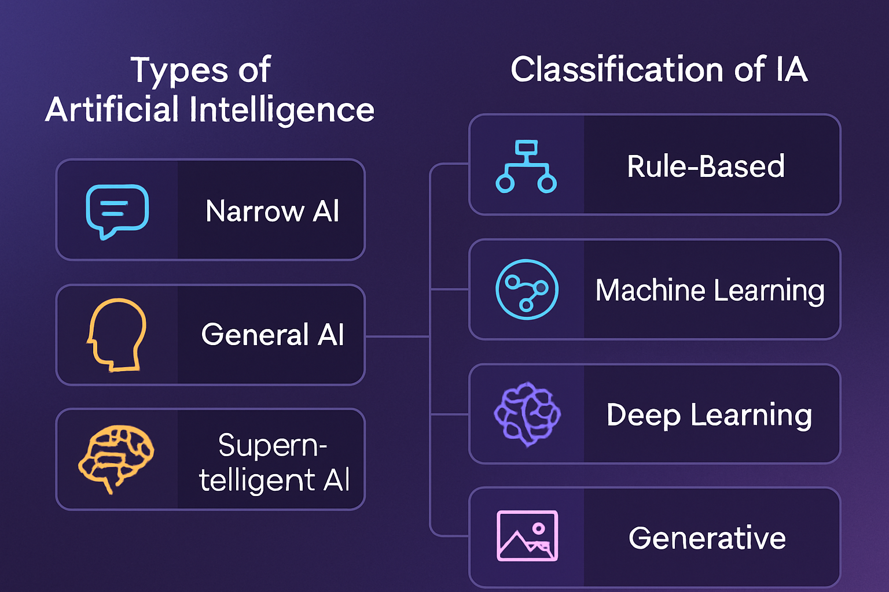

Índice
Tipos de Inteligencia Artificial1. IA reactivaLa inteligencia artificial reactiva es considerada el tipo más básico y antiguo de inteligencia artificial. Estos sistemas están diseñados para responder únicamente a estímulos concretos utilizando la información disponible en el momento exacto en el que actúan. No poseen memoria, aprendizaje ni capacidad para almacenar experiencias anteriores. La IA reactiva funciona mediante reglas programadas previamente. Esto significa que cada respuesta depende exclusivamente de las condiciones establecidas por los programadores. La máquina analiza la situación actual y genera una respuesta automática, pero no recuerda acciones pasadas ni modifica su comportamiento con el tiempo. Los primeros sistemas de inteligencia artificial desarrollados en la historia pertenecían a esta categoría. Aunque sus capacidades eran muy limitadas comparadas con las actuales, representaron un enorme avance tecnológico para su época. Uno de los ejemplos más conocidos fue Deep Blue. Esta máquina logró derrotar al campeón mundial de ajedrez Garry Kasparov en 1997 analizando millones de posibles movimientos en cuestión de segundos. Sin embargo, Deep Blue no aprendía de partidas anteriores ni desarrollaba estrategias propias fuera de su programación. La IA reactiva demuestra que una máquina puede resolver problemas complejos mediante cálculos y análisis rápidos, aunque sin comprender realmente la información ni desarrollar inteligencia humana auténtica. 2. IA de memoria limitadaLa IA de memoria limitada representa una evolución importante respecto a la IA reactiva. A diferencia de los sistemas básicos, este tipo de inteligencia artificial puede almacenar cierta información temporal y utilizar datos previos para mejorar sus respuestas y decisiones. Los sistemas de memoria limitada analizan experiencias anteriores durante un periodo determinado. Gracias a ello, pueden adaptarse mejor a diferentes situaciones y ofrecer resultados más precisos. Actualmente, gran parte de las tecnologías modernas basadas en inteligencia artificial pertenecen a esta categoría. Su funcionamiento depende de enormes cantidades de datos y de sistemas capaces de aprender parcialmente a partir de experiencias pasadas. El desarrollo de este tipo de IA fue posible gracias al crecimiento de internet, el aumento de la capacidad informática y el acceso masivo a información digital durante el siglo XXI. Además, el avance de las redes neuronales y del aprendizaje automático permitió que estos sistemas mejoraran considerablemente su rendimiento. Esto convirtió a la IA de memoria limitada en uno de los pilares fundamentales de la inteligencia artificial moderna. 3. IA de aprendizaje automáticoLa inteligencia artificial de aprendizaje automático, también conocida como machine learning, es un tipo de IA capaz de aprender mediante el análisis de datos y experiencias previas sin necesidad de ser programada para cada situación específica. En lugar de seguir únicamente reglas fijas, estos sistemas analizan enormes cantidades de información para detectar patrones, relaciones y comportamientos repetitivos. A partir de esos datos, la máquina mejora progresivamente su funcionamiento. El aprendizaje automático ha representado uno de los avances más importantes dentro de la inteligencia artificial moderna porque permite crear sistemas mucho más flexibles y eficientes. Gracias a este tipo de IA, las máquinas pueden adaptarse continuamente a nueva información y mejorar su rendimiento con el tiempo. Esto ha permitido desarrollar tecnologías cada vez más avanzadas y complejas. El crecimiento del aprendizaje automático durante las últimas décadas ha impulsado enormemente la evolución de la inteligencia artificial en todo el mundo. 4. IA basada en redes neuronalesLa IA basada en redes neuronales se inspira en el funcionamiento del cerebro humano. Estos sistemas están formados por estructuras matemáticas capaces de procesar grandes cantidades de información mediante conexiones similares a las neuronas humanas. Las redes neuronales permiten que las máquinas analicen datos de manera mucho más avanzada que los sistemas tradicionales. Gracias a ello, la inteligencia artificial puede reconocer patrones complejos, interpretar información y mejorar progresivamente sus resultados. Durante los últimos años, las redes neuronales profundas han impulsado enormes avances dentro de la inteligencia artificial. Este desarrollo permitió crear sistemas mucho más potentes y sofisticados que los existentes anteriormente. El crecimiento de la capacidad informática y la disponibilidad masiva de datos fueron fundamentales para el desarrollo de este tipo de IA. Actualmente, las redes neuronales son consideradas una de las tecnologías más importantes dentro de la evolución moderna de la inteligencia artificial. 5. IA especializada o débilLa IA especializada, también conocida como IA débil, es aquella diseñada para realizar tareas concretas y específicas. Estos sistemas funcionan de manera eficiente dentro de un área determinada, pero no poseen capacidades generales similares a las de los seres humanos. La mayoría de las inteligencias artificiales actuales pertenecen a esta categoría. Son sistemas creados para ejecutar funciones específicas utilizando algoritmos y análisis de datos. Aunque pueden realizar ciertas tareas con gran precisión, la IA especializada no posee conciencia, emociones ni comprensión real de la información que procesa. Su funcionamiento depende de modelos matemáticos y datos previamente analizados. Por ello, su capacidad se limita a las funciones para las cuales fue diseñada. La IA especializada representa actualmente el nivel más desarrollado y extendido dentro de la inteligencia artificial moderna. 6. IA generalLa inteligencia artificial general es un concepto mucho más avanzado y todavía teórico. Se refiere a una IA capaz de realizar cualquier tarea intelectual que pueda hacer un ser humano. A diferencia de la IA especializada, una inteligencia artificial general tendría la capacidad de aprender, razonar, adaptarse y resolver problemas en diferentes contextos sin depender únicamente de una programación específica. Este tipo de IA sería capaz de comprender información de manera mucho más amplia y flexible, desarrollando habilidades similares a la inteligencia humana. Actualmente, no existe ninguna inteligencia artificial general completamente desarrollada. Sin embargo, numerosos científicos y empresas tecnológicas investigan constantemente en esta dirección. La creación de una IA general representaría uno de los mayores avances tecnológicos de la historia, aunque también generaría importantes debates científicos, éticos y sociales. 7. IA con teoría de la menteLa IA con teoría de la mente es un tipo de inteligencia artificial orientado a comprender emociones, pensamientos e intenciones humanas. El término “teoría de la mente” proviene de la psicología y hace referencia a la capacidad de entender que otras personas poseen emociones, deseos y pensamientos propios. Los investigadores buscan desarrollar sistemas capaces de interpretar comportamientos humanos y responder de forma más natural y cercana. Para alcanzar este nivel, las máquinas deberían comprender emociones, lenguaje corporal, expresiones y otros elementos complejos de la interacción social humana. Actualmente, este tipo de IA todavía se encuentra en desarrollo y representa uno de los desafíos más difíciles dentro de la inteligencia artificial moderna. Muchos expertos consideran que lograr una IA con teoría de la mente requerirá avances enormes en neurociencia, psicología y computación avanzada. 8. IA autoconscienteLa IA autoconsciente representa el nivel más avanzado y complejo dentro de la inteligencia artificial. Este tipo de IA tendría conciencia propia y capacidad para comprender su existencia. Una inteligencia artificial autoconsciente podría tomar decisiones independientes, reflexionar sobre sí misma y actuar de manera completamente autónoma. Actualmente, esta tecnología no existe y sigue siendo un concepto teórico y filosófico. Sin embargo, la idea ha generado numerosos debates sobre el futuro de la inteligencia artificial y sus posibles consecuencias para la humanidad. La posibilidad de crear máquinas autoconscientes plantea preguntas relacionadas con la ética, la seguridad y los límites tecnológicos. Además, la IA autoconsciente ha sido representada en numerosas películas y obras de ciencia ficción, donde las máquinas desarrollan comportamientos similares a los humanos. Aunque todavía estamos lejos de alcanzar este nivel tecnológico, muchos investigadores consideran que la inteligencia artificial continuará evolucionando durante las próximas décadas.  |